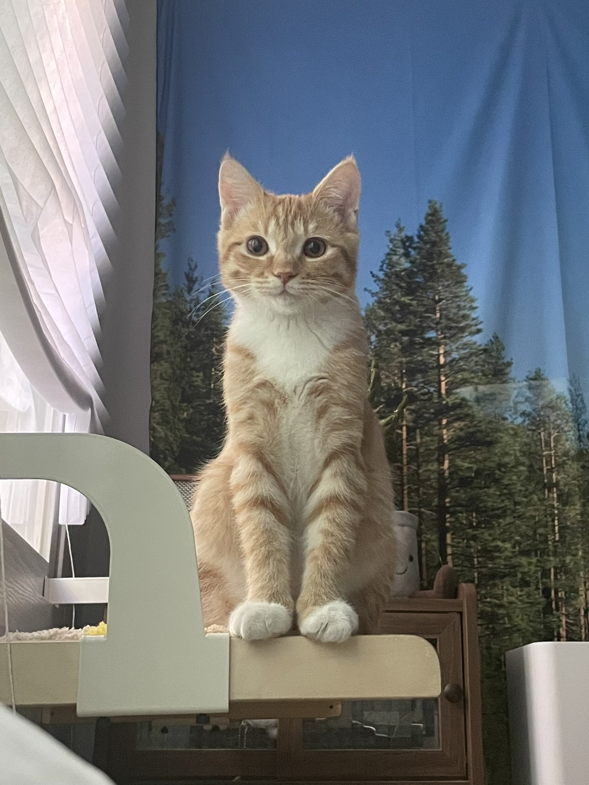
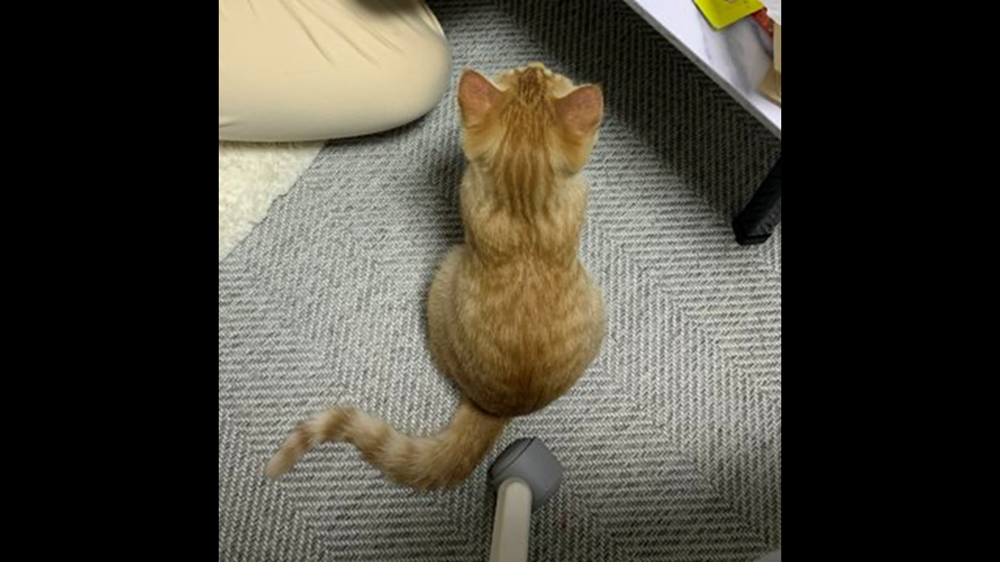
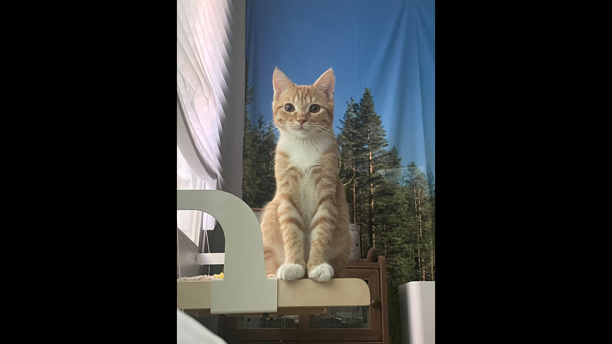
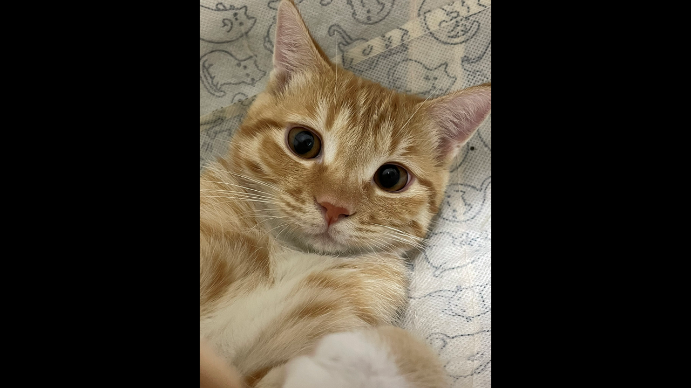

Youtube
Clone Coding: Youtube Mobile Website 유튜브 모바일 웹사이트 따라 만들기| 프론트엔드 입문: HTML, CSS, Javascript | 영상 - JAVA/swing 배치관리자 활용한 영상 | 영상참고출처 - 유튜브/드림코딩
조회수 1.3만회 | 1개월 전
#Coding #HTML, CSS #SooBin
2.5천
싫어요
공유
저장
Coding By SooBin
구독자 586명
구독
댓글 543

멋진 영상입니다! 구독하고 가요~
Up next

귀여운 고양이 뒷모습 | 귀여운 고양이가 담겨있는 영상
coding by Soobin
82K views

귀엽게 앉아 있는 고양이 | 🐈🐈🐈
coding by Soobin
80K views

고양이 셀카 | 다양한 종류의 고양이 영상
coding by Soobin
78K views